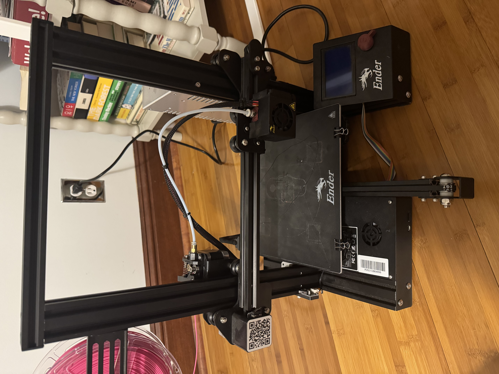
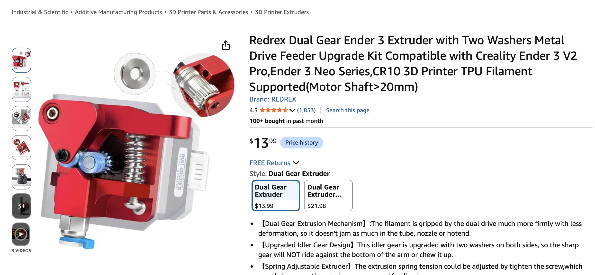
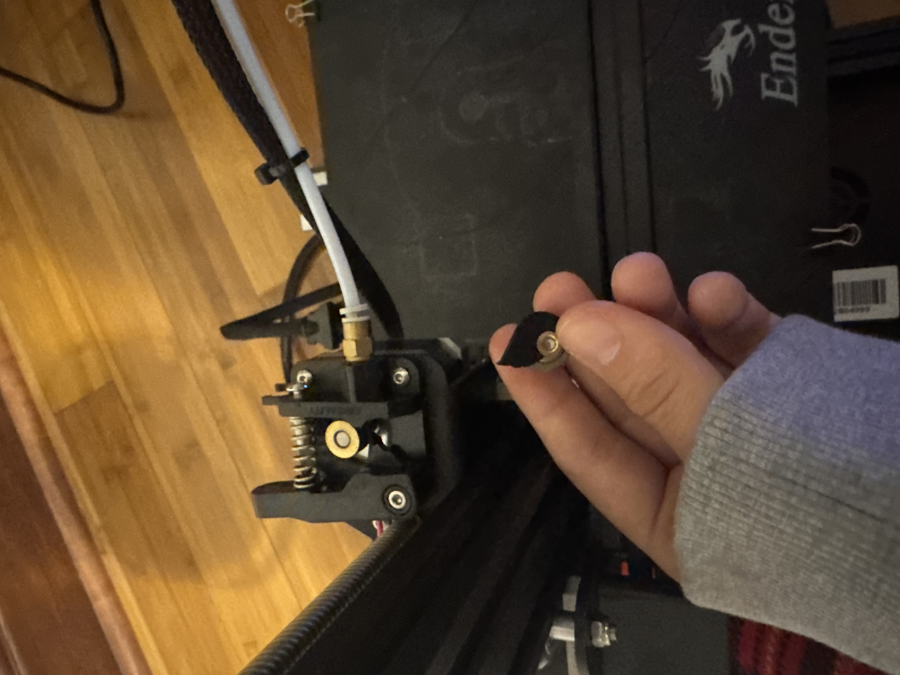
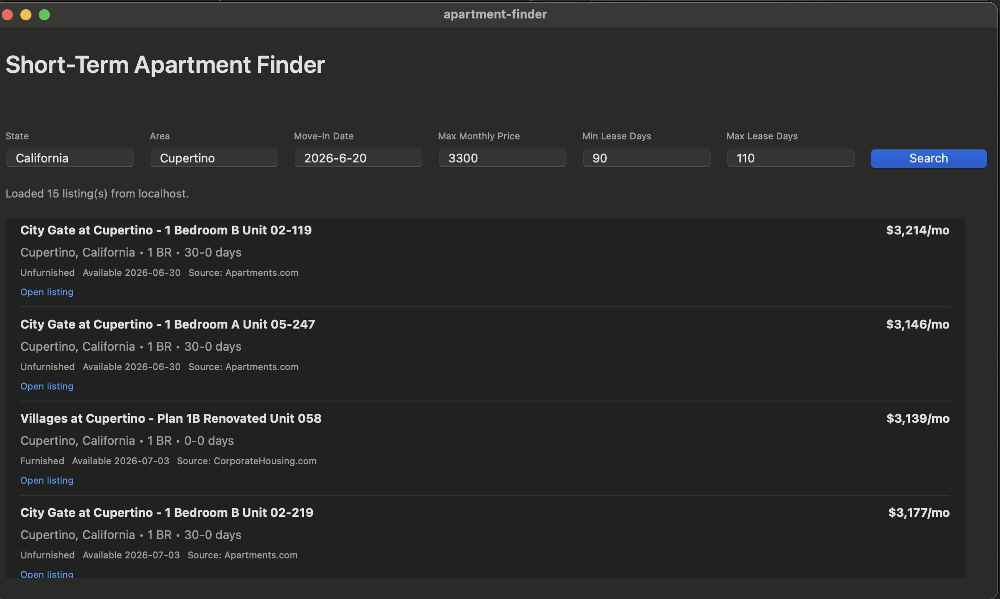
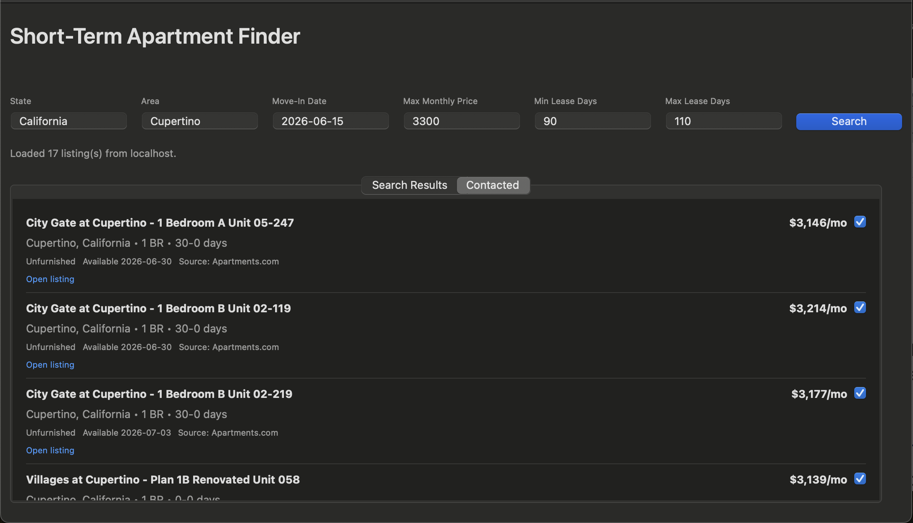

Some fun projects I'm going to work on this summer.
This summer, I'll be working on Apple's iCloud Privacy team. But I'm going to be working on some sort of side project throughout the entire summer.
Project One
Ender 3 Printer

After the keyboard phase, naturally, I have to have a 3D printer phase. Right now, I have an Ender 3, and I'm going to set it up and customize it over the summer.
Ender 3 printers are common open-source machines, but they are still fairly manual and a little rough around the edges. There is no automatic bed leveling by default, setup can be finicky, and getting consistently good prints usually takes iteration.
The goal of this section is to track upgrades, fixes, calibration notes, and what changes actually make the printer better over time.
What I'm Tracking
- Printer upgrades and quality-of-life improvements
- Better calibration and more reliable print settings
- Experiments with materials, parts, and workflows
Week of 07/22


The first signs of trouble showed up fast. I found the correct cable to plug my printer in, and after the moment of truth, nothing happened.
The first step was to get the printer running. Unfortunately, with a seven-year-old second-hand printer, something was bound to go wrong, and a bearing for loading the PLA into the extruder broke off. So I ordered a replacement piece so I can start printing.
Next steps are getting a first successful print, adding automatic bed leveling, and setting up a Raspberry Pi server so I don't have to load files manually with an SD card.
Project Two
Apartment Finder
So, I've been a bit of a bum. 1) I start work in one day and didn't find an apartment in Cupertino. 2) I haven't set up OpenClaw, which is also pretty bummy, considering I probably hear about OpenClaw more than the weather.
To kill two birds with one stone, I'm going to build out a widget that helps me find short-lease apartments in Cupertino under a certain price and helps me actually get an apartment.
I'm setting up the frontend as a Swift app that posts to a local HTTP server acting as a bridge between the frontend and, soon, my OpenClaw agent. This gives the frontend a stable API so I can select an area, max price, min price, and lease length, then send those values to the local server.
From there, OpenClaw sits behind the server as a reasoning layer. It interacts with the internet, filters postings, and returns apartments I can hopefully afford.
Search Payload
POST /apartments/search payload:
{
"state": "California",
"maxPrice": 3300,
"minLeaseDays": 90,
"maxLeaseDays": 110,
"area": "Cupertino"
}Once this JSON is received by the backend, it gets logged and routed to either live or demo mode. A JavaScript runner builds a natural-language prompt and launches the agent search.
openclaw agent --local --json \
--session-key agent:apartment-scraper:default \
--timeout 180 \
--message ""OpenClaw browses the internet and returns JSON-like output, which I then parse and normalize into the app's listing schema. Since the OpenClaw response often comes wrapped in metadata, the runner checks fields like:
payloads[0].text
finalAssistantVisibleText
finalAssistantRawTextAfter that, a `normalizeListings` script cleans the results, verifies that required fields exist, checks that URLs work, and deduplicates repeated listings. The server then returns clean JSON to the Swift frontend, where I can view apartment results.

That part is already pretty cool. But I still don't want to click every link, email each place manually, and track everything myself.
The next step is selecting apartments I contacted, moving them into a separate tab, and saving them into `UserDefaults` so I don't have to rerun queries every time.

After that, I want to add details in one place and use the Apple Mail API to poll my inbox every five minutes for any emails from apartments. I can also add a status tracker to manage applications.
OpenClaw can then help draft responses or suggest next actions, like calling them, based on the email correspondence.